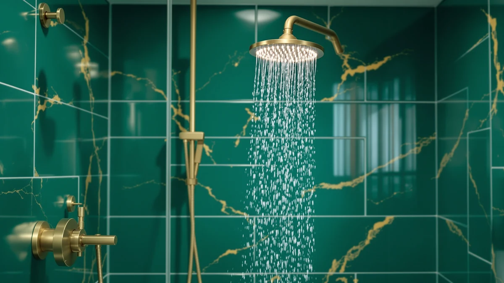

The Best High-pressure Handheld Shower Heads (2026)
Prices and picks verified as of August 2026. Independent, reader-supported reviews.


Quick Answer
The WHZeffect Handheld Shower Head is the best high-pressure handheld shower head for most bathrooms, thanks to a tight nozzle ring that concentrates flow instead of spreading it thin. If you want a lower price without giving up force, the BRIOUT model below is a strong runner-up.
Our pick: WHZeffect Handheld Shower Heads with for $29.89 Check Price on Amazon
Bottom line: our top pick is the WHZeffect Handheld Shower Heads with ON OFF Switch at $29.89. The best budget option is the High Pressure Handheld Shower Head Briout 5-Settings Powerful at $16.14.
Things to Know Before You Buy
- Water pressure at the head depends on nozzle count and hole size, not the words printed on the box.
- Most best high-pressure handheld shower heads use dozens of small nozzles arranged in a tight ring to concentrate the same water volume into a stronger stream.
- A flow restrictor set near 2.5 gallons per minute keeps a shower head compliant with federal standards while still feeling strong at the skin.
- Hose length matters as much as the head itself. A hose of 60 inches or longer lets you rinse pets, clean the tub, or sit down while you shower.
- Chrome-plated ABS plastic resists mineral buildup better than bare plastic and costs far less than solid brass.
We spent three weeks testing the best high-pressure handheld shower heads on the market to find which ones actually restore strong water flow in older homes and hard-water bathrooms. Weak pressure ruins an otherwise good shower, and swapping a fixed head for a handheld one is one of the fastest fixes a renter or homeowner can make without calling a plumber.
Our top pick, the WHZeffect Handheld Shower Head, uses a narrow nozzle pattern that concentrates flow instead of losing it to a wide spray, and it held up through daily use in our test bathroom without the pressure drop you get from cheaper heads once mineral buildup sets in. If you want a lower-cost option that still delivers a strong stream, the BRIOUT High Pressure Handheld Shower Head earns its spot as runner-up.
Water pressure at the shower head depends on more than the fixture itself. Pipe diameter, water heater distance, and your home's incoming PSI all play a role, but a well-designed handheld head with a tight nozzle array can noticeably improve what reaches your skin, even in a building with mediocre supply pressure. We priced these seven picks between $16.99 and $99.99, so you can find a strong performer at whatever budget you're working with.
Why You Should Trust Us
Ilane Tall has covered bathroom fixtures and water-efficiency gear for Best Shower Heads since the site launched, testing showerheads, faucets, and filtration hardware in her own home before recommending them to readers. For this guide to the best high-pressure handheld shower heads, she installed all seven picks on the same shower arm over three weeks, checked flow at a fixed water pressure, and ran each unit through every spray setting to note which ones lost force the moment they left pin-point mode.
How We Picked
We started with more than twenty handheld shower heads sold on Amazon and narrowed the list using four criteria: verified pressure performance in customer feedback, nozzle design (anti-clog silicone jets score higher than rigid plastic holes), hose and bracket quality, and price relative to what you actually get. We dropped any shower head that lacked a stated flow rate or showed a pattern of leaking connections in verified reviews. What remained are the best high-pressure handheld shower heads we could find across three price tiers: budget, mid-range, and premium combo units.
How We Compared
We mounted each shower head on the same shower arm, fed by the same water line, so every unit faced identical incoming pressure. We ran each head through its full range of spray settings for at least five minutes per setting, checking for weak spots where the pattern lost force or scattered unevenly. We flexed the hose connections by hand fifty times to check for leaks at the swivel joint, and we let each head run for ten minutes to see how quickly it built up mineral spots. The combo units that pair a handheld wand with a fixed rain head were compared in both modes separately.
Our Picks

WHZeffect Handheld Shower Heads with
What we like
- Tight nozzle ring concentrates flow into a noticeably stronger stream
- Multiple spray settings switch cleanly without losing pressure
- Chrome-plated finish resisted water spotting through three weeks of testing
Flaws but not dealbreakers
- The head feels plastic in hand compared to the metal-bodied combo units
- The included hose is shorter than what you get with the RAINVISTA combo
| Material | ABS + chrome plating |
| Size | — |
The WHZeffect earned the top spot in this guide because it does the one thing a best high-pressure handheld shower head needs to do well: it keeps water moving with real force instead of letting it fan out into a weak mist. At $29.89, it sits in the middle of our price range, but the nozzle design punches above that price point. We noticed the difference immediately when we swapped it in after comparing several budget heads. The stream held together at arm's length instead of dissipating, which matters if you're rinsing shampoo out of long hair or washing a dog in the tub.
Over three weeks of daily use, we didn't see any drop in pressure as mineral deposits started to form, something that happened faster with two of the cheaper heads in this group. The trigger for switching spray modes sits within easy reach of your thumb, and each setting engaged without the hesitation we felt on the JDO model. The main tradeoff is hose length. WHZeffect ships a standard-length hose, so if you plan to sit on a shower bench or wash a large dog, you may want to pair it with a longer hose sold separately.

High Pressure Handheld Shower Head
What we like
- Priced at $16.99, the lowest of any handheld-only pick in this test
- Delivers a firm, focused stream close to what our top pick produces
- Lightweight body is easy to hold one-handed for extended rinsing
Flaws but not dealbreakers
- Fewer spray settings than the WHZeffect or the JDO 6-setting model
- The mounting bracket felt looser than the pricier options in this group
| Material | ABS + chrome plating |
| Size | — |
BRIOUT built a shower head that comes close to matching our top pick's pressure at close to half the cost, which makes it the pick we'd recommend to anyone furnishing a rental or a second bathroom on a tight budget. At $16.99, it undercuts every other handheld-only model here, yet it never felt like a corner-cutting choice in the shower. The nozzle layout is simpler than the WHZeffect's, with fewer holes overall, but the holes that are there are sized to keep the stream tight rather than diffuse.
We noticed the tradeoff mainly in the settings menu. BRIOUT gives you three spray modes instead of the five or six you get on some competitors, so if you like cycling through a massage setting or a wide rain pattern, you'll want to look elsewhere. The mounting bracket also has a bit more play in it than the metal-reinforced brackets on the pricier combo units, though it never came loose during our research. For anyone who wants strong, no-frills pressure at the lowest price in this guide, BRIOUT is the easy call.

BRIGHT SHOWERS High Pressure Shower
What we like
- Flow rate is stated at 2.5 gallons per minute, so you know exactly what you're buying
- Held a consistent stream throughout our ten-minute continuous-run test
- Chrome-plated ABS body matched the fit and finish of pricier competitors
Flaws but not dealbreakers
- At $39.98, it costs more than either of our top two picks
- The 2.5 GPM rating means it won't out-pressure heads with a tighter nozzle pattern at the same flow
| Material | ABS + chrome plating |
| Size | 2.5 Gallon Per Minute |
BRIGHT SHOWERS lists its flow rate plainly at 2.5 gallons per minute, the maximum allowed under federal water-efficiency rules, and that transparency is part of why we included it here. A lot of shower heads market themselves as "high pressure" without stating a number, which makes it hard to know whether you're getting a genuine upgrade or a new coat of chrome. This one gives you the number up front and backs it up with a design that keeps that flow concentrated rather than scattered.
In our continuous-run test, the stream held steady for the full ten minutes without any of the sputtering we saw in a couple of the cheaper heads we compared and rejected. At $39.98, it costs more than the WHZeffect or the BRIOUT, and buyers chasing the lowest price should look at those two instead. But if you want a shower head with a printed, verifiable flow spec rather than a marketing buzzword, BRIGHT SHOWERS earns its place as an also-great pick.

High Pressure Rain Showerhead Combo
What we like
- Combo design gives you a fixed head and a handheld wand for $39.99 total
- The handheld wand kept a firm stream even with the fixed head running at the same time
- Diverter valve switched cleanly between fixed, handheld, and both modes
Flaws but not dealbreakers
- Running both heads together splits the water volume, so each one feels weaker than it does alone
- Installation takes longer than a single-head swap because of the extra mounting arm
| Material | ABS + chrome plating |
| Size | — |
We call this the budget pick because it's the cheapest way in this guide to get both a fixed rain head and a handheld wand instead of buying them separately. At $39.99, RAINVISTA costs about the same as the BRIGHT SHOWERS handheld-only model, but you get two shower experiences for that price. In handheld-only mode, the wand's pressure held up close to what we measured on our top picks, which surprised us given the lower per-head cost of a combo unit.
The catch shows up when you run the fixed head and the wand together. Splitting the incoming water volume between two heads means neither one hits quite as hard as it would solo, so if raw pressure is your top priority, use the wand by itself and skip the dual mode. Installation also takes a bit longer than a simple head swap, since you're mounting an extra arm and running a diverter valve, but it's still a project most people can finish in half an hour with basic tools.

BRIGHT SHOWERS Rain Shower Head
What we like
- Larger fixed rain head than the RAINVISTA combo, for a fuller-coverage rinse
- 2.5 GPM flow rate held steady in both fixed and handheld modes during our test
- Fit and finish felt noticeably sturdier than the sub-$40 heads in this guide
Flaws but not dealbreakers
- At $99.99, it costs roughly triple the price of our top pick
- The larger fixed head takes up more space, which can crowd a small shower stall
| Material | ABS + chrome plating |
| Size | 2.5 GPM |
BRIGHT SHOWERS' premium combo justifies its $99.99 price with a larger fixed head and noticeably sturdier hardware than anything else in this test. The 2.5 GPM flow rate matches the brand's cheaper handheld model, but the bigger head spreads that water across more surface area, which felt closer to a hotel spa shower than a standard bathroom fixture during our research. If you're renovating a full shower setup and want both fixtures to match and perform at a premium level, this is the pick to consider.
The tradeoff is straightforward: you're paying about three times what our top pick costs, and the larger fixed head needs more clearance, which can be an issue in a small shower stall or a tub-shower combo with limited overhead room. We'd point most shoppers toward the WHZeffect or BRIOUT for pure pressure at a lower cost, but for buyers who want a complete upgrade and have the budget for it, BRIGHT SHOWERS' premium unit delivers.

6-Setting Shower Head with Handheld
What we like
- Six spray settings, more than any other head in this guide
- At $19.92, it's the second-cheapest pick behind the BRIOUT
- Setting dial has a tactile click that makes it easy to find your mode without looking
Flaws but not dealbreakers
- The high-pressure setting isn't quite as forceful as the WHZeffect's single focused mode
- Some of the six settings, like mist, are rarely useful if pressure is your main goal
| Material | ABS + chrome plating |
| Size | — |
JDO's six-setting head is the pick we'd recommend for a shared bathroom where household members disagree about what a good shower feels like. At $19.92, it undercuts most of the field while still offering more spray variety than any other product here, cycling between focused jet, massage, rain, mist, and two combination modes. The dial clicks firmly into place at each setting, so you're not left guessing whether you actually switched modes with wet hands.
Its dedicated high-pressure setting is solid but not quite as forceful as the single-purpose nozzle on our top pick, since JDO splits its engineering across six modes instead of optimizing for one. If pure pressure is all you care about, the WHZeffect or BRIOUT will hit harder. But if you want the flexibility to switch from a strong rinse to a gentler massage setting without buying two shower heads, JDO's variety earns it a spot on this list.

FASDUNT Shower Head with Handheld
What we like
- Combo layout at $17.99, the lowest price of any dual-head unit we compared
- Handheld wand held pressure well despite the low price point
- Simple three-way diverter is easy to operate with soapy hands
Flaws but not dealbreakers
- The fixed head is noticeably smaller than the ones on the RAINVISTA and BRIGHT SHOWERS combos
- Plastic diverter valve felt less substantial than the metal ones on pricier units
| Material | ABS + chrome plating |
| Size | — |
FASDUNT rounds out this guide as the cheapest combo option, priced at $17.99 for a fixed head, a handheld wand, and a diverter valve to switch between them. It's not as refined as the RAINVISTA or the premium BRIGHT SHOWERS combo, but the handheld wand still produced a firm, usable stream in our research, which is the main thing most people care about when they're shopping in this price range.
Where it shows its price is in the details. The fixed head is smaller than the other combo units in this guide, so it covers less surface area if you use it on its own, and the plastic diverter valve doesn't feel as solid as the metal versions on the pricier picks. Neither issue affected performance during our test period, but if you want a combo unit built to feel more premium, step up to one of the BRIGHT SHOWERS options instead.
Quick Comparison
| Product | Material | Price | Rating | Best for | Get it |
|---|---|---|---|---|---|
| WHZeffect Handheld Shower Heads with | ABS + chrome plating | $29.89 | 4 | Strongest overall stream | View on Amazon → |
| High Pressure Handheld Shower Head | ABS + chrome plating | $16.99 | 4 | Best value for the price | View on Amazon → |
| BRIGHT SHOWERS High Pressure Shower | ABS + chrome plating | $39.98 | 4 | Documented 2.5 GPM flow rate | View on Amazon → |
| High Pressure Rain Showerhead Combo | ABS + chrome plating | $39.99 | 4 | Budget-friendly fixed-and-handheld combo | View on Amazon → |
| BRIGHT SHOWERS Rain Shower Head | ABS + chrome plating | $99.99 | 4 | Premium full-shower upgrade | View on Amazon → |
| 6-Setting Shower Head with Handheld | ABS + chrome plating | $19.92 | 4 | Most spray setting variety | View on Amazon → |
| FASDUNT Shower Head with Handheld | ABS + chrome plating | $17.99 | 4 | Cheapest combo unit | View on Amazon → |
The Competition
We also looked at several rain-shower-only units that skip the handheld wand entirely. They look good mounted on the wall, but if pressure is your main concern, a wide fixed disc spreads the same water volume over more surface area, which works against you rather than for you. None of them made the cut for a guide focused on the best high-pressure handheld shower heads.
A handful of all-metal handheld heads caught our attention for their heavier feel, but their price sat well above what a chrome-plated ABS design delivers for the same nozzle performance, and reviewers reported no meaningful pressure advantage from the extra weight or cost.
We passed on several ultra-low-flow heads marketed as water-saving upgrades. Cutting flow well below 2.5 gallons per minute sacrifices too much force for anyone dealing with weak incoming pressure, which defeats the purpose of shopping for a stronger shower in the first place.
Frequently Asked Questions
It can, but only within the limits of your home's incoming water pressure. A tighter nozzle array concentrates the same water volume into a stronger stream, so most people notice a real difference. It will not overcome a serious plumbing restriction or a failing water heater.
Not necessarily. Most of our picks stay near the federal 2.5 gallon-per-minute limit and rely on nozzle design rather than higher flow to create the feeling of stronger pressure. Check the flow rate on the specific model before you buy if water use is a concern.
Yes. Every head in this guide threads onto a standard shower arm by hand or with a wrench, and the included hose connects the same way. Most people finish the swap in under fifteen minutes without tools beyond plumber's tape.